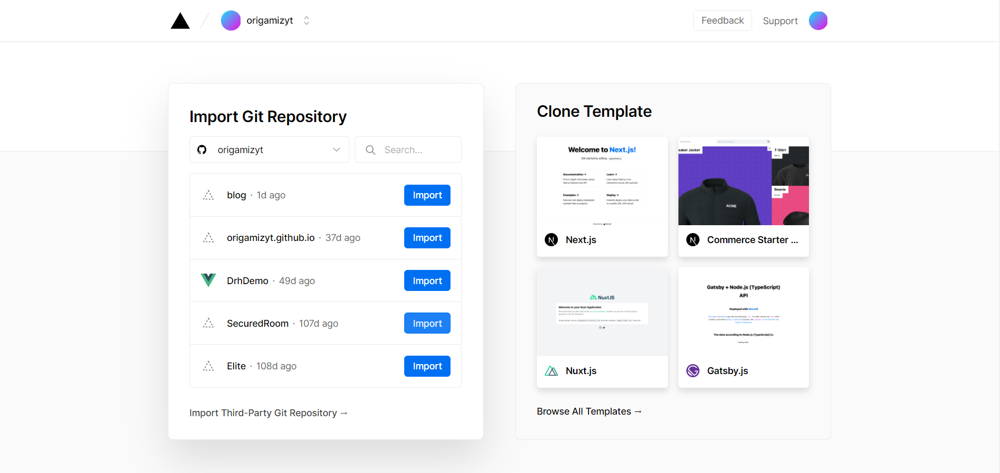
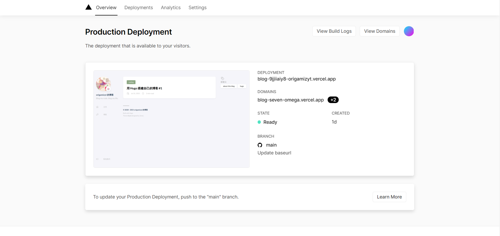

部署准备工作
修改 config.toml
打开 config.toml，修改如下内容：
baseurl = "http://your-domain.com/" # 改为你的域名与路径
relativeurls = true
注：如果你没有自己的域名，将
baseurl设置为"/"。
创建 Git 代码库
在项目目录中初始化一个代码库并 Push：
$ git init
$ git add .
$ git commit -m "Initial commit"
$ git branch -M main
$ git remote add origin https://github.com/some-user/some-project.git
$ git push -u origin main
接下来就可以将网页部署至 Vercel 了。部署方式有两种，一种是将 public 文件夹内本地渲染的静态内容部署，另一种是 Vercel 的自动化部署。
由于 Stack 与 Vercel 的 Hugo 版本不兼容，我选择了第一种方法。想看第二种方法请直接跳过下一节。
部署渲染内容
使用 hugo 命令在本地生成静态 HTML 文件：
$ hugo
访问 Vercel 主页，找到最底下的 Import Git Repository / Continue with Github（当然其他 Git 仓库也可以）， 授权 Vercel 访问 Github（可能需要科学上网）。在出现的仓库列表中选择你的代码库。

在 Create Team 面板中点击 Skip，把 Configure Project 中的 Framework Preset 改为 Other。 点击 Deploy，稍等片刻就可以看到自己的网页了。

Vercel 自动部署
访问 Vercel 主页，找到最底下的 Import Git Repository / Continue with Github（当然其他 Git 仓库也可以）， 授权 Vercel 访问 Github（可能需要科学上网）。在出现的仓库列表中选择你的代码库。
在 Create Team 面板中点击 Skip，检查 Configure Project 中的 Framework Preset 是否为 Hugo。 点击 Deploy，等待 Hugo 渲染你的页面。
如果渲染出错，那么可以尝试第一种方式。
部署之后
现在你的页面应该已经上线了。你的域名应以 .vercel.app 结尾，表明这是 Vercel 为你托管的。你也可以在 Settings / Domains 中 添加自定义域名。